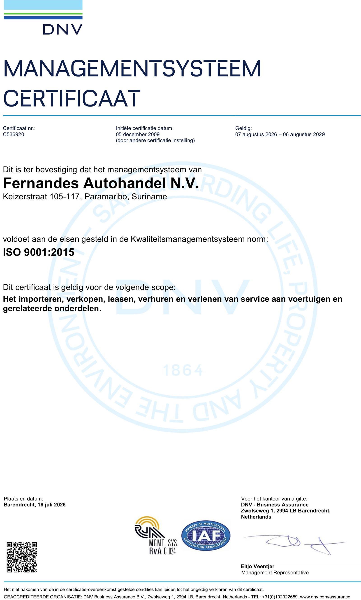
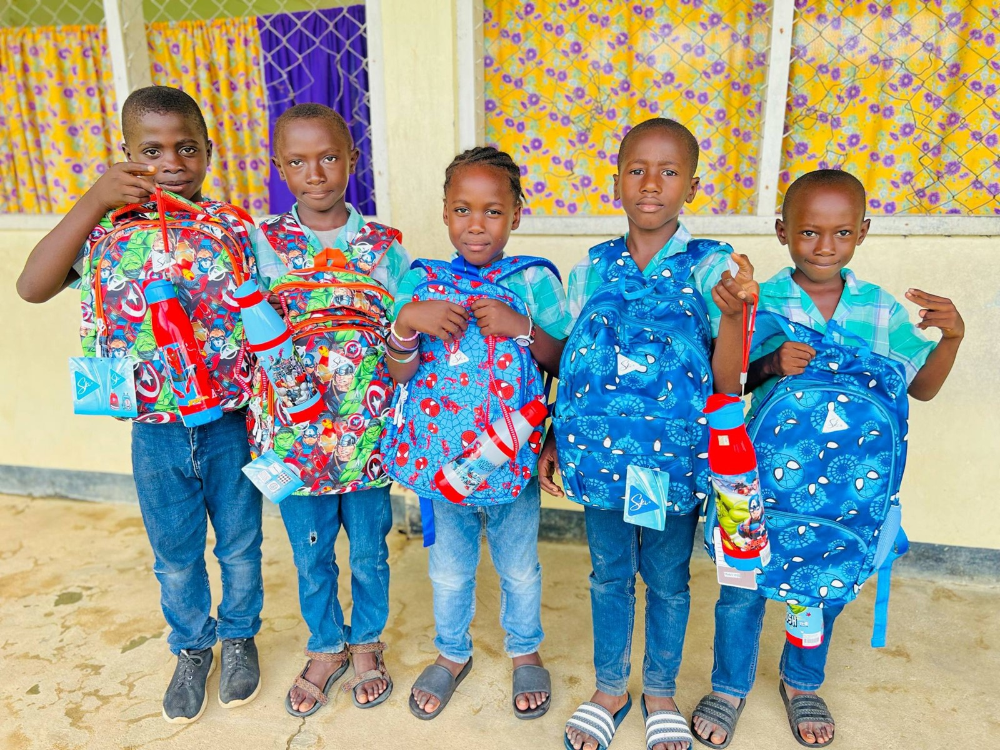
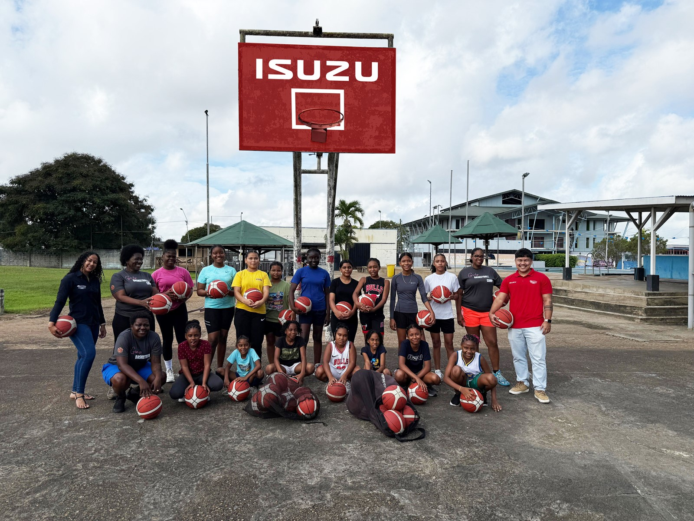
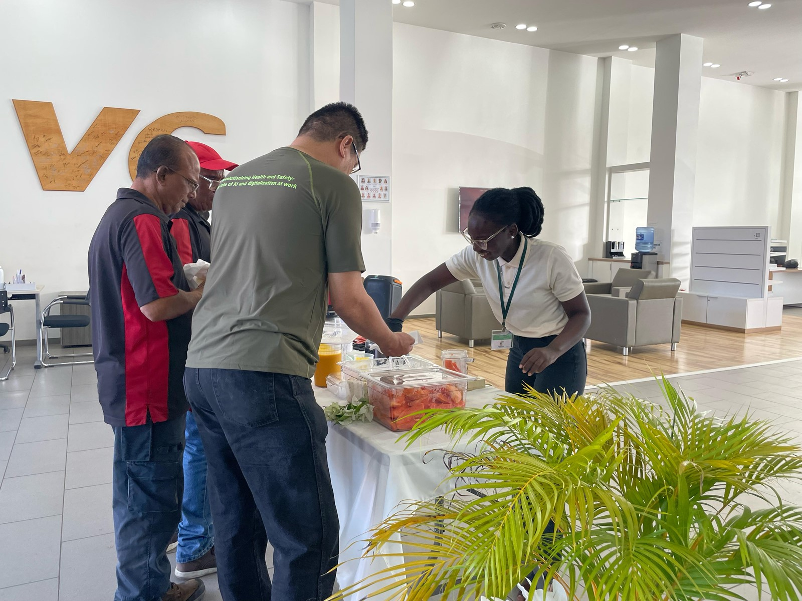

Where it all began
Izaak Fernandes starts a small soap factory behind his house on Keizerstraat. The roots of the Fernandes family business.

A family business four generations deep, part of the FernandesGroup. From a small workshop to Honda, GAC and Isuzu, two workshops and a Truck Center.
Izaak Fernandes starts a small soap factory behind his house on Keizerstraat. The roots of the Fernandes family business.
On the Klipstenenstraat: Fargo trucks, cars, mopeds, bicycles, parts and outboard motors. The very first car sold is a Plymouth.
Fernandes becomes Isuzu agent. Isuzu buses gradually replace the Mercedes buses on Surinamese streets.
A milestone for a young company in a small market.
Fernandes Concern Beheer N.V. is founded, with Fernandes Autohandel as one of its companies.
More than 5,500 Isuzu vehicles, for the bus sector, the police, private and agricultural customers.
The first company in Suriname to offer leasing, with Suralco, EBS, SWM, Staatsolie and VSH among the first clients.
A hit with mining customers, who reach the interior much faster.
Isuzu's "Number 1 Share in Truck Market" award for Suriname, and Honda's Challenging Spirit Award.
The first ISO 9001 certificate. Today: ISO 9001:2015.
A brand-new car without unexpected maintenance or repair costs, now for private customers too.
Fernandes Autohandel celebrates its 70th anniversary.
Official and exclusive GAC dealer since 13 February, and the Fernandes Truck Center in Wanica.

Fernandes Autohandel is part of Fernandes Concern Beheer N.V., the FernandesGroup, founded in 1981. Its roots go back to Izaak Fernandes, born 1860. Today the group is led by his great-grandson, Jules Fernandes.
Clients include Staatsolie, EBS, SWM and Dalian, alongside thousands of private drivers.
Our vision is simple: meeting our customers' transport needs. Seven values decide how we do it.
Meeting our customers' transport needs with excellent service and quality products, and being the trendsetter in customised automotive products.
With passionate people and a focus on development, we create a unique customer experience and an inspiring, innovative place to work.
Our customers range from private drivers to multinationals, government, oil, banks and insurers. Our HSEQ policy is how we keep all of them satisfied, safely.

Fernandes Autohandel on Keizerstraat is certified to ISO 9001:2015, audited by DNV.
Our management system is built on continuous improvement: internal audits, customer feedback and yearly policy reviews.
Clear responsibilities and procedures, removing work-related risks, and training and motivating our people.
Meeting every legal requirement, lasting relationships with stakeholders, and waste handled responsibly: reduce, reuse, recycle.
Putting ourselves in the customer's shoes, asking for feedback and improving our processes with it.
HSEQ policy signed by Patrick Pengel, Director, Paramaribo, 7 March 2026.
Fernandes is always glad to contribute to the social development of Suriname and its people. A few recent projects:

Together with Rico Astrando Bommel, a donation for primary school OS 2 Goejaba in Sipaliwini.

For the first girls' basketball camp in Suriname, organised by the Surinamese Basketball Association.

A day for our own team: safety and health at work come first.
A healthy mix of experienced craftsmen and young, driven people, working together so our customers are and stay satisfied.

Email FAH.HRM@Fernandes.sr, or bring it to Keizerstraat 105-117, attn. HRM.
Vacancy titles taken from the current website; the live list is kept up to date by HRM.
| Monday – Friday | 8:00 – 16:30 |
| Saturday | 9:00 – 13:00 |
| Sunday | Closed |